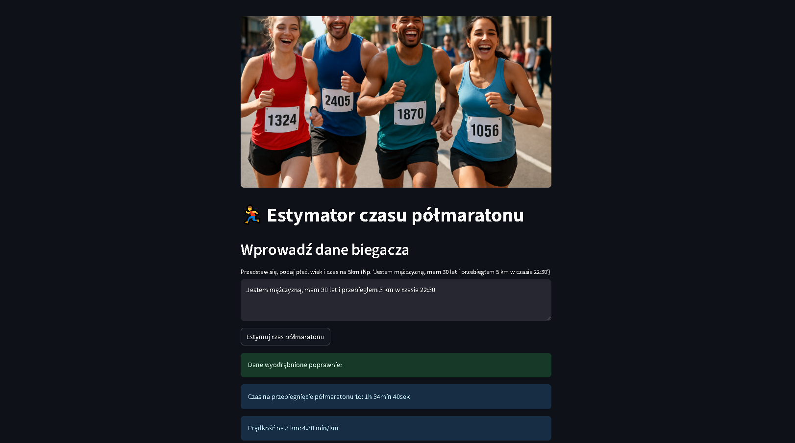

🏃 Half Marathon Time Estimator
Application Description
This is an intelligent web application that uses machine learning to predict half marathon (21.097 km) completion time based on runner data. The application combines advanced AI/ML technologies with a user-friendly interface.
 Application interface – the user can describe themselves naturally, and the AI will automatically extract key information
🛠️ Technologies Used
Frontend & Framework: - Streamlit – main framework for building the web interface - HTML/CSS – styling and layout
Backend & AI/ML: - Python 3.8+ – main programming language - PyCaret – library for automating machine learning - Gradient Boosting Regressor – ML model for time prediction - OpenAI GPT-3.5-turbo – Large Language Model for natural language processing
Cloud & Storage: - Digital Ocean Spaces – storage for the ML model and resources - Boto3 – AWS S3 client for communication with Digital Ocean Spaces - Langfuse – monitoring and metrics for LLM
Data Processing: - Pandas – data manipulation and analysis - NumPy – numerical computations
Configuration & Security: - Python-dotenv – environment variable management - Environment variables – secure storage of API keys
🚀 Main Application Features
Intelligent natural language processing
- The user describes themselves naturally (e.g., "I am a man, I am 30 years old and I ran 5 km in 22:30")
- The LLM automatically extracts key information: gender, age, 5 km time
Automatic ML model download
- The model is always up to date – downloaded from the cloud at each launch
- No need to manually update the model locally
Half marathon time prediction
- The ML model analyzes the input data and predicts the half marathon completion time
- The result is presented in a readable format (hours, minutes, seconds)
Intelligent time format conversion
- Supports various time input formats (mm:ss, minutes seconds, number of minutes)
- Automatic conversion to the format required by the model
Monitoring and metrics
- Integration with Langfuse for tracking LLM performance
- Collecting data on the quality of natural language processing
Error handling and validation
- Checking completeness of input data
- Clear error messages and missing information alerts
💡 Example usage
User enters: "I am a woman, I am 28 years old, and my 5km time is 25 minutes"
Application:
1. Extracts: gender=0 (female), age=28, 5km_pace=5.0 min/km
2. Passes data to the ML model
3. Returns the predicted half marathon time
4. Displays the result in the format "2h 15min 30s"
🔧 Architecture
- Modular structure with separate functions for each task
- Langfuse decorators for monitoring LLM performance
- Secure API key management via environment variables
- Automatic deployment via Digital Ocean App Platform
🎯 Business Value
This application demonstrates advanced integration of various AI/ML technologies in a practical solution, combining natural language processing with machine learning prediction. It is an example of real-world AI application in sports and health, showing how data can be used for personalization and training optimization.
🔗 Links
- 🚀 App demo: https://maratonik-app-hnu3v.ondigitalocean.app/
- 🐙 Source code: https://github.com/cptzbik/halfmaraton